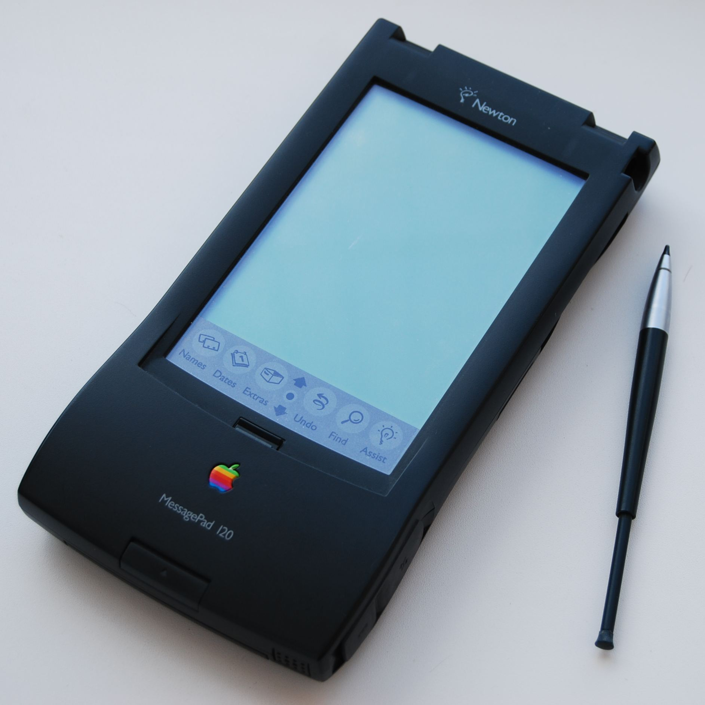

Introdução a mobile
Historia
1993
Primeiros aparelhos
Newton Message PAD
- tela sensível ao toque
- 1MB de memória
1996
Palms
Pilot 1000 e 5000

- Lançado pela U.S. Robotics
- dominaram a maior parte do mercado e existem até hoje
Windows CE 1.0

2000
Pocket PC 2000

- HP Jornada
- Compaq Ipaq
- Fez grande contribuição
- Comprado pela Nokia e usado por eles em seus aparelhos até 2012
iOS

- Apresentado em 2007 na Macworld Conference & Expo como iPhone OS
- Uma adaptação do sistema para Desktop
- Não tinha suporte para 3G
- Apos duas atulizações deu a posibilidade de comprar musicas pelo iTunes
Android

- Surgiu em 2003 na california
- Desenvolvido por Andy Rubin, Rich Miner, Nick Sears e Chris White, que fundaram a Android Inc.
- Open Source, baseado no kernel do linux
- Em 2005 a Android Inc. é comprada pelo Google, formando a Google Mobile Division
- Em 2007 grandes empresas como, Samsumg, Sony, HTC, entre outras se associam em um consórcio para criar o Open Handset Alliance
- E em 22 de Outubro de 2008 é lançado oficialmente o primeiro Android, rodando em HTC Dream

Primeiro Android no HTC Dream
Nativo
X
Híbrido
Nativos
- Aplicativos desenvolvidos na linguagem nativa do Sistema Operacional
Híbridos
- Aplicativos multi-plataforma desenvolvidos em uma linguagem qualquer
Vantagens
Nativo
- Maior integração com o Sistema
- Mais atualizado
- Melhor interação com os recursos de Hardware
Híbrido
- Mais barato
- Desenvolvimento facilitado
- Entrada no mercado mais rapida
Desvantagens
Nativo
- Um aplicativo para cada Sistema
- Mais caro
- Desenvolvimento mais lento
Híbrido
- Atualizações mais lentas
- Integração pior com o sistema
- Maior tempo de resposta
Agora vamos pensar um pouco
Mãos na massa
O que eu preciso saber para progamar para Android nativo?
- Java
- XML
- Programação Orientada à Objetos
Android Studio
O Android Studio é a principal plataforma para desenvolvimento de aplicações android, conta com recursos de auto-indentação, emuladores, debug, previews, gradle, etc. Além disso, faz muitas coisas automaticamente, poupando tempo pro desenvolvedor produzir ainda mais.
Criando um projeto
Seleção do nivel da API
Nem todos os aparelhos recebem as novas atualizações do Android, por isso, ao criar seu aplicativo, lembre-se do seu público-alvo, é importante que seu app seja compatível com o celular deles. O Android Studio fornece a porcentagem de usuários que possuem a versão selecionada ou superior, isso é um ótimo indicativo na hora de escolher a API. É interessante saber que o Android está bem equipado para suportar diferente versões de um app, ele pode ter um visual para um mais avançado, e uma versão automaticamente adaptada para uma versão mais simples. Ex.: Barra de status colorida para usuários com Android 5 ou superior.
XML e Java
No desenvolvimento de aplicativos android, se trabalha principalmente com XML, que cuida do visual do app, e com Java, que cuida dos processos que o app irá realizar. Os objetos que estão no XML são referenciados no Java e assim são facilmente manipulados, mandando e recebendo novas informações e comandos.
Android Manifest
Possivelmente, o arquivo mais importante do projeto, é o espaço onde são declaradas as configurações como activities, permissões, serviços, temas, ícone, etc.
Activities
Que negócio é esse?
Activity é um componente de aplicativo que fornece uma tela com a qual os usuários podem interagir para fazer algo, como discar um número no telefone, tirar uma foto, enviar um e-mail ou ver um mapa. Cada atividade recebe uma janela que exibe a interface do usuário. Geralmente, a janela preenche a tela, mas pode ser menor que a tela e flutuar sobre outras janelas.
Descrição do Android Developer
Ciclo de vida
Metodos
onCreate()
É a primeira função a ser executada em uma Activity. Geralmente é a responsável por carregar os layouts XML e outras operações de inicialização. É executada apenas uma vez.
onStart()
É chamada imediatamente após a onCreate() – e também quando uma Activity que estava em background volta a ter foco.
onResume()
Assim como a onStart(), é chamada na inicialização da Activity e também quando uma Activity volta a ter foco. Qual a diferença entre as duas? A onStart() só é chamada quando a Activity não estava mais visível e volta a ter o foco, a onResume() é chamada nas “retomadas de foco”.
onPause()
É a primeira função a ser invocada quando a Activity perde o foco (isso ocorre quando uma nova Activity é iniciada).
onStop()
Só é chamada quando a Activity fica completamente encoberta por outra Activity.
onDestroy()
A última função a ser executada. Depois dela, a Activity é considerada “morta” – ou seja, nao pode mais ser relançada. Se o usuário voltar a requisitar essa Activity, um novo objeto será contruído.
onRestart()
Chamada imediatamente antes da onStart(), quando uma Activity volta a ter o foco depois de estar em background.
definição e imagem do DEVMEDIA